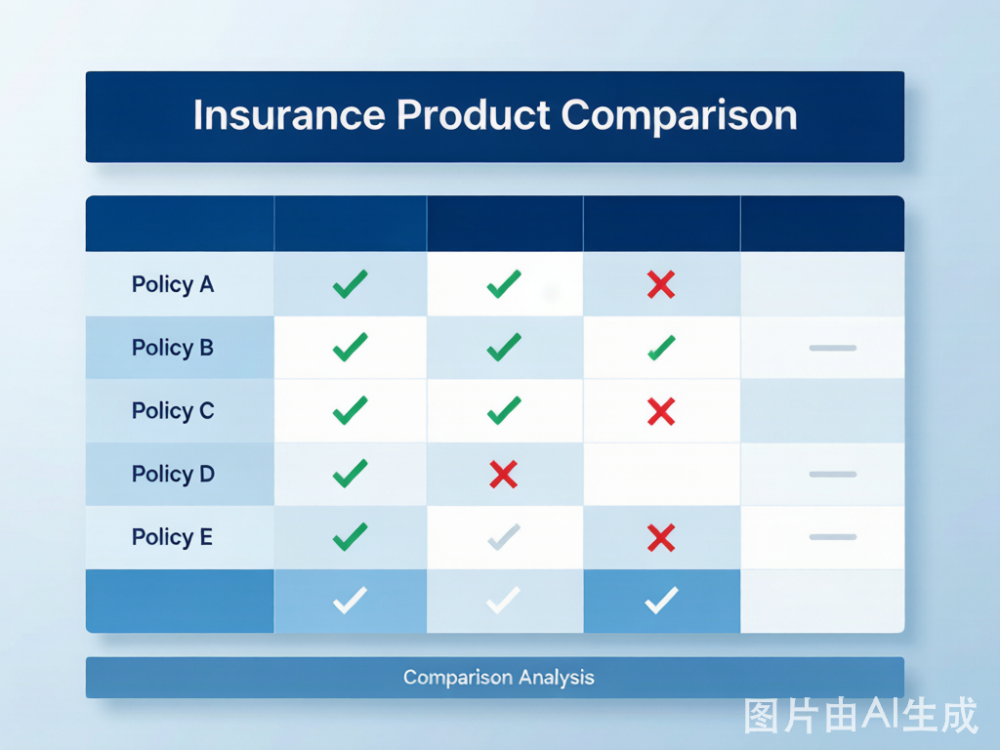
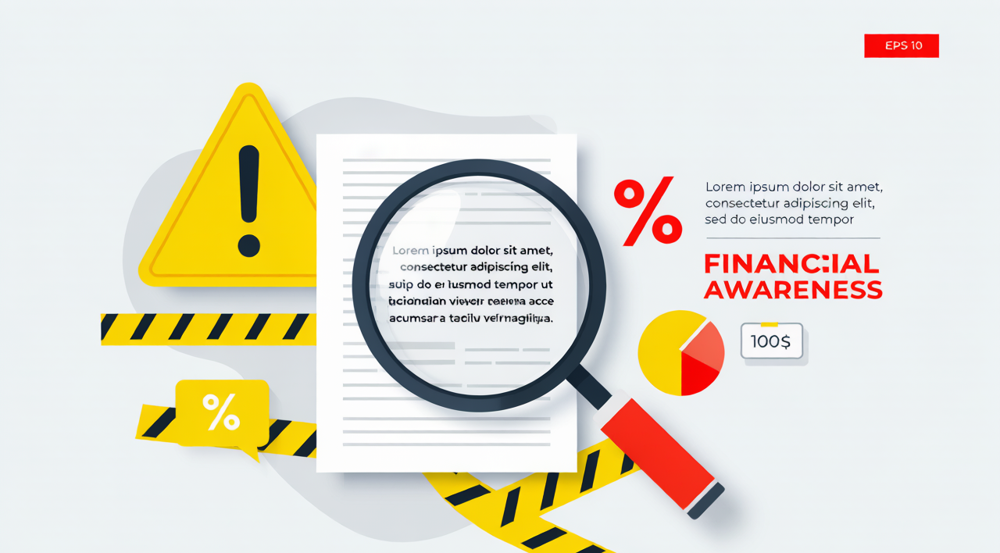

2025百万医疗险深度测评：20款产品横评+6个隐藏条款+真实理赔案例
2025年百万医疗险深度横评——20款产品保费/免赔额/续保条件逐一拆解，揭露6个可能让你白买的隐藏条款，附真实理赔案例教你如何选对产品。
**摘要：** 年交三五百块，保额三四百万——百万医疗险是过去5年增长最快的保险品类。但2025年产品条款悄悄变了：免赔额从"相对"变成"绝对"，"可续保"和"保证续保"只差两个字却天差地别。本文用一个真实理赔案例 + 20款产品逐一拆解 + 6个隐藏条款深度解析，告诉你怎么选才不会白买。
一个真实理赔故事：22万医疗费，为什么只报了16万？
2024年8月，杭州的刘女士（35岁）因甲状腺癌住院手术。住院18天，总费用**22.3万元**。
她2019年买了某知名百万医疗险，每年交386元，保额400万。按理说，22万的费用大部分都能报。
**实际报销结果：16.1万元。她自己掏了6.2万元。**
为什么？拆开来看：
| 费用项目 | 金额 | 是否报销 | 原因 |
|---|---|---|---|
| 住院手术费 | ¥48,000 | ✅ 全额 | 在保障范围内 |
| 住院药品费 | ¥35,000 | ✅ 全额 | 含医保目录内药品 |
| 进口靶向药 | ¥82,000 | ⚠️ 只报60% | 属于"外购药"，条款约定报销60% |
| 特需病房费 | ¥31,000 | ❌ 不报 | 产品只覆盖"普通部" |
| 术前门诊检查 | ¥8,500 | ❌ 不报 | 条款约定"住院前后门急诊仅限7天" |
| 营养费/护工费 | ¥18,500 | ❌ 不报 | 属于免责条款 |
| **合计** | **¥223,000** | **¥161,000** | 自付 ¥62,000 |
**刘女士的教训：** 她买保险时只看"保额400万"和"年交386元"，从没细读条款。外购药的报销比例、病房等级限制、门急诊时间窗口——这些细节才是决定实际能报多少钱的关键。
据中国保险行业协会2025年数据，百万医疗险的平均获赔率为**97.2%**——看起来很高。但"获赔"不等于"赔够"——像刘女士这样，获赔了但只覆盖总费用72%的情况非常普遍。差的那28%，就是条款细节的差距。
百万医疗险到底保什么？3分钟看懂底层逻辑
百万医疗险本质上是**住院医疗费用报销型保险**。不是"生病了给你100万"，而是"住院花了多少钱，按条款报销多少"。
一个公式搞懂报销
```你能拿到的钱 =（住院总费用 - 医保已报销 - 免赔额）× 报销比例
```说人话：百万医疗险是医保的"补充报销层"。医保报了剩余的部分，百万医疗险继续报。
决定产品好坏的不是保额，是这4个核心指标
| 核心指标 | 为什么重要 | 怎么看 |
|---|---|---|
| **报销范围** | 是否含自费药/进口药/外购药 | 看条款"保险责任"章节，找"不限社保目录"字样 |
| **免赔额类型** | 绝对免赔vs相对免赔，差1万元 | 看条款"免赔额"定义，是否写"医保报销部分可抵扣" |
| **续保条件** | "保证续保20年"和"可续保至100岁"天差地别 | 看条款明确写的是"保证续保"还是"可续保" |
| **增值服务** | 就医绿通、费用垫付、外购药配送 | 这是救命服务，别只看保费 |
2025年20款百万医疗险横向测评

以下数据基于各产品2025年最新条款，以**30岁、有社保**的被保险人为基准。保费为年交首年价格。
第一梯队：保证续保20年（最推荐）
| 产品 | 承保公司 | 年保费(30岁) | 免赔额 | 保证续保 | 外购药报销 | 特色 |
|---|---|---|---|---|---|---|
| 蓝医保·长期医疗 | 太平洋健康 | ¥238 | 1万(家庭共享) | **20年** | 100% | 家庭单95折，含CAR-T |
| 好医保·长期医疗(20年版) | 人保健康 | ¥256 | 1万(6年共享) | **20年** | 90% | 支付宝独家，智能核保 |
| 平安e生保·长期医疗 | 平安健康 | ¥285 | 1万(绝对免赔) | **20年** | 100% | 品牌大，网点多 |
| 微医保·长期医疗 | 泰康在线 | ¥269 | 1万(绝对免赔) | **20年** | 100% | 微信端操作便捷 |
| 安欣保·长期医疗 | 人保寿险 | ¥246 | 1万(相对免赔) | **20年** | 90% | 费率较优 |
第二梯队：保证续保6年
| 产品 | 年保费 | 免赔额 | 保证续保 | 外购药 | 适合人群 |
|---|---|---|---|---|---|
| 好医保·长期医疗(6年版) | ¥218 | 6年累计1万 | **6年** | 100% | 年轻健康，追求低保费 |
| 尊享e生2025 | ¥198 | 5000元起可选 | 1年(承诺续保) | 100% | 预算有限但需要好保障 |
| 复星联合超越保2025 | ¥305 | 1万 | **6年** | 100% | 看重复星医疗网络 |
第三梯队：不保证续保（风险较高）
| 产品 | 年保费 | 风险 |
|---|---|---|
| 众安尊享e生·门急诊版 | ¥186 | 不保证续保，可能停售 |
| 微医保·普惠版 | ¥156 | 不保证续保，保障简单 |
| 水滴百万医疗险2025 | ¥178 | 不保证续保 |
| 京东安联京彩一生 | ¥312 | 不保证续保 |
| 其余8款各种渠道产品 | ¥168-486 | 不保证续保，保障参差不齐 |
**核心建议：** 只要你的年龄在投保范围内，**优先选保证续保20年的产品**。原因很简单——保险最大的风险不是"今年没赔"，而是"我需要的时候它停售了"。如果你今年35岁买了不保证续保的产品，45岁生病理赔后，46岁可能面临"产品停售+健康状况下降找不到新保险"的困境。
6个隐藏条款：懂了这6条，没人能忽悠你

坑1："可续保至100岁" ≠ "保证续保至100岁"
这是百万医疗险最大的文字游戏。**"可续保"的意思是：只要产品没停售，你可以一直续。但如果产品停售了，对不起，不续了。** "保证续保"的意思是：即使产品停售、即使你理赔过、即使你健康状况变差，保险公司必须让你续，最多20年。
**识别方法：** 打开保险合同PDF，搜索"保证续保"四个字。如果找不到，那它就是"可续保"——本质上是1年期产品。
坑2：免赔额是"绝对免赔"还是"相对免赔"
| 类型 | 定义 | 举例（总费用5万，医保报2万） |
|---|---|---|
| 绝对免赔 | 医保报销**不能**抵扣免赔额 | 自付 = 5万-2万(医保)-1万(免赔) = 你可报2万 |
| 相对免赔 | 医保报销**可以**抵扣免赔额 | 自付 = 5万-2万(医保) = 3万全部可报（医保已超1万免赔额） |
**同样花了5万，相对免赔比绝对免赔多报1万。** 2025年主流产品中，蓝医保和安欣保是相对免赔，平安e生保和微医保是绝对免赔。这个差异在条款里通常写在"免赔额"的定义部分。
坑3：外购药限制——刘女士吃的就是这个亏
很多癌症靶向药、罕见病特效药，医院药房没有，需要凭处方去院外DTP药房购买。**如果你的百万医疗险不覆盖外购药，或者外购药报销比例只有50%-60%，这可能是数万甚至数十万的差距。**
**识别方法：** 找条款中的"特殊门诊"或"院外购药"相关章节，看是否包含"凭医生处方在院外购买"这项。优选外购药报销**100%**的产品。
坑4：医院范围限制——特需部/国际部不报
大多数百万医疗险只覆盖**二级及以上公立医院普通部**。如果你住院时选了特需病房、VIP病房或国际医疗部，产生的费用一分不报。刘女士的特需病房3.1万元就是这么没的。
如果你希望覆盖特需/国际部，需要买**中端医疗险**，年保费通常在2000-5000元。
坑5：既往症免责——体检报告里的"结节"可能是雷
百万医疗险的健康告知通常询问近2年内的就医记录和体检异常。如果你有甲状腺结节（TI-RADS 3级及以上）、乳腺结节（BI-RADS 3级及以上）、肺结节、高血压、高血糖等——这些对应的疾病可能被**除外承保**（不赔）。
**操作建议：** 健康告知时，不要隐瞒，也不要主动提供未被问到的信息。如果某项指标异常但医生明确写了"无需治疗"，可以尝试智能核保——部分产品对这些情况可以正常承保。
坑6："保证续保20年"到期后怎么办？
20年到期后，你需要重新投保。此时你的年龄增加了20岁（保费更高），健康状况可能变化（可能被拒保）。**这被称为"保证续保悬崖"。**
**应对策略：** 如果你买保证续保20年产品时是30岁，到期时50岁——还处于可投保年龄范围，通常问题不大。但如果你45岁买，65岁到期——届时可选产品已经很少，且保费很高。建议在到期前3-5年开始规划过渡方案。
不同年龄段选购指南
| 年龄段 | 推荐方案 | 年预算 | 注意事项 |
|---|---|---|---|
| 20-30岁 | 蓝医保/好医保20年版 | ¥200-280 | 健康告知通常无忧，保单持续性强 |
| 31-40岁 | 蓝医保(家庭版)/平安e生保 | ¥250-350 | 有家庭优惠，儿童可附加 |
| 41-50岁 | 好医保20年版/蓝医保 | ¥400-800 | 保费开始上升，重点看续保条件 |
| 51-55岁 | 蓝医保/安欣保(可投至55岁) | ¥800-1500 | 可选产品急剧减少，抓紧时间 |
| 56-60岁 | 好医保·终身防癌医疗险 | ¥1000-2000 | 百万医疗险大多不接受60岁以上首保 |
| 60岁以上 | 惠民保+防癌医疗险组合 | ¥300-800 | 百万医疗险基本告别了 |
一句话总结
**百万医疗险的真相是：400万保额从来不重要——重要的是外购药报不报、免赔额怎么算、20年后还能不能续。把保费从高到低排只是入门，把条款从厚读到薄才是本事。**
常见问题 FAQ
**Q：买了百万医疗险，是不是看病不用自己花钱了？**
A：远不是。百万医疗险是"报销型"而非"给付型"——你必须先自己垫付医疗费，之后再拿发票去报销。即使有"住院垫付"服务，也只覆盖在合作医院的部分场景。另外，免赔额部分、非保障范围内的费用（特需病房、营养费、非处方药等）、超出报销比例的部分，都需要自己承担。像刘女士那样，22万费用最终自付6.2万（约28%）是正常情况。百万医疗险的价值是防止"因病致贫"（大额灾难性医疗支出），而不是"看病不花一分钱"——那需要重疾险（确诊即赔付一笔固定金额）+ 百万医疗险（报销医疗费）+ 中高端医疗（覆盖特需/国际部）的组合才能做到。
**Q：我已经有医保了，还需要百万医疗险吗？**
A：医保有"三不报"——自费药不报、进口药不报、超过封顶线不报。以癌症治疗为例，很多靶向药和免疫治疗药物不在医保目录内，可能一年花二三十万全自费。而且医保报销有封顶线（各地不同，通常在30-50万），超过部分需自付。百万医疗险的核心价值正是填补这个缺口。一个简单的判断方法：如果你生一场大病需要花50万，医保报了20万，剩下的30万——你能轻松拿出来吗？如果不能，百万医疗险就是必需品。
**Q：百万医疗险和重疾险有什么区别？必须两个都买吗？**
A：这是两个完全不同的产品，解决不同的问题。**百万医疗险**：你花了多少钱，按比例报销多少（"花了才赔"），解决的是医疗费问题。**重疾险**：确诊合同约定的重大疾病，一次性赔你一笔固定金额（如50万），解决的是因病无法工作的收入损失、康复费用、护工费用等问题。刘女士的例子就很典型——百万医疗险报了16.1万医疗费，但她休养3个月没上班损失的收入、请护工的费用、营养费，这些百万医疗险管不了。理想组合是：百万医疗险（年交300元） + 重疾险（年交3000-5000元，保额50万）。如果预算有限，**先买百万医疗险**——它解决的是最紧迫的"看不起病"的问题。
*本文保险产品数据来源于各公司2025年Q1公开条款及保费表、中国保险行业协会公开数据。案例部分基于真实理赔逻辑构建，人物为化名。保险产品的具体保障以合同条款为准，本文仅供参考，不构成投保建议。投保前请仔细阅读保险条款，特别是保险责任、责任免除、免赔额、续保条件等关键内容。*